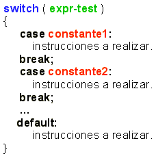

Actividad: Tarea sobre sobre el uso de la estructura condicional switch: Estatutos condicionales.
info_outline
Actividad: Tarea sobre sobre el uso de la estructura condicional switch: Estatutos condicionales.
Desarrollarás la solución de algunos problemas.
group Modalidad
Individual
check Objetivos de aprendizaje
- Aplicar la estructura de control
switch.
list Instrucciones
- Desarrolla el algoritmo e impleméntalo en un programa en Python para cada uno de los ejercicios que se presentan a continuación.
- Entrega, en la sección de "Envío de Tareas", los archivos que contengan los programas en C. Es importante que al inicio de cada archivo coloques el o los algoritmos que utilizaste.
- La actividad será evaluada usando la siguiente rubrica.
-
Problemas:
Utiliza el siguiente esquema como apoyo para desarrollar tus soluciones:

-
Ejercicio 1
Desarrolla e implementa un algoritmo que despliegue el mes(o meses) en que debe llevar a verificar un coche en función del número de terminación de sus placas. Revisa la siguiente tabla:
Terminación Meses 1,2 "Enero - Febrero" 3,4 "Marzo - Abril" 5,6 "Mayo - Junio" 7,8 "Julio - Agosto - Septiembre" 9,0 "Octubre - Noviembre" Cualquier otra terminación "Terminación inválida" Incluye el algoritmo como comentario al inicio del programa.
attachmentRecursos
offline_pin Especificaciones de entrega
Los archivos deberán ser entregados a través de la sección de "Envío de Tareas" de Blackboard.